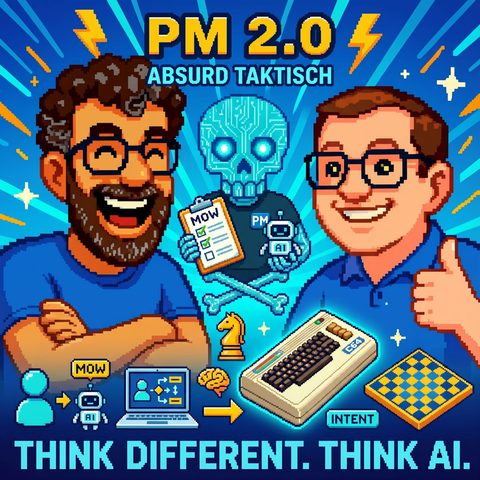

PM 2.0
Auf Deutsch lesenTopics SoftwareentwicklungFührung und Arbeit
Guest Markus Andrezak
What it is about
Absurd Taktisch
Markus Andrezak – Überprodukt (Product and Strategy Consulting, CEO/CPO Coaching) is our guest and shares why he went from AI skeptic to believer. With over 30 years of experience in product management, from Fireball to eBay and beyond, he describes how his work has fundamentally changed through context engineering, agents, and automated workflows.
It's about the uncomfortable truth that AI-generated PRDs are often better than what many product managers deliver under time pressure. Involves synthetic personas, simulated strategy workshops costing 30 dollars in API fees, and the question of why the coding bottleneck is disappearing, similar to when Continuous Deployment emerged and no one believed that you could deploy a hundred times a day.
Markus, Jens, and Mark discuss what generalists, specialists, and product managers will really do in two years, why assessments are moving to the end of the value chain, and why the most painful part of the change is the restructuring of the brain, not the technology.
An episode for everyone who wants to know what professional work with AI looks like today – beyond the "I entered five prompts in ChatGPT" bubble.
Mentioned terms and people
Context Engineering – A method of breaking down tasks into many small steps and purposefully filling them with content
PRD (Product Requirements Document) – Classic product management document
Henry Ford and the faster horse
Kent Beck – Software pioneer, source of the 90/10 quote
Andy Jassy / Amazon – Example of a clear AI strategy
Boris Cherny – Cloud Code, ADHD Development style
Patagonia – Example of brand analysis with agents
MyHammer – Markus' example company for the data science story
Mark Andreessen – "Mexican Standoff" of roles
Oliver Schwartz – "They want it, but they can't do it so well yet"
More from Markus
Überprodukt: product consulting
Markus on LinkedIn
Transcript
00:00:00Welcome to Think Different, Think AI, the podcast from Mark and Jens.
00:00:07Two technology-loving minds who don’t just talk about artificial intelligence but live it.
00:00:14Here you will find clear classifications, real practical insights, and a fresh perspective on what is possible.
00:00:20Understandable, critical, and always with a wink.
00:00:24The part for reflection, for smiling, and above all, for joining in.
00:00:35Hello, welcome to a new episode of Pink Different Pink AI.
00:00:40Today it's time again. We’ve had this a few times this year.
00:00:43We have a guest again. And this time I proudly announce,
00:00:48that it's a guest I brought along.
00:00:50Otherwise, it was always people Mark picked up somewhere.
00:00:54He took them in and didn’t bring them home, right?
00:00:59Yes, yes, just kidding, I don’t want to make a long intro here.
00:01:04I’m really excited that today we get to talk about product management, the future
00:01:08of product management, especially with regard to AI and with AI and without AI and without product managers,
00:01:14however we’ll talk about that, with the lovely Markus Andrezak,
00:01:19let's turn it around.
00:01:20I always wonder if I’m pronouncing his name correctly, even though we
00:01:22Yes, it’s all corrected.
00:01:24André, zack, André, zack, go ahead and say it yourself.
00:01:28There are various forms. It doesn’t matter. André, zack.
00:01:30André, zack. Okay. So I wasn't that bad after all.
00:01:32Markus, great to have you here.
00:01:34Hi. I’m glad to be here.
00:01:36Yes, that’s cool.
00:01:38I just wanted to say a couple of words because I already know you, right?
00:01:40Mark knows you a bit from the preparation,
00:01:42but our listeners out there might not know you partially,
00:01:44but some will definitely not know you yet.
00:01:46Yes, Markus André, go for it.
00:01:48I own a mini-mini company, which consists only of me.
00:01:50Here it's about overproduced products, I do product consulting and strategy consulting,
00:01:54I do CEO, CPO, coaching, public affairs, power workshops, and stuff like that. Exactly, and I've been building
00:02:02digital products for almost 35 years or so, or 30 years, since the mid-90s. My first
00:02:11major thing back then was that famous Fireball search engine, I worked on that. That
00:02:16was back then one of the top 5 German sites or something like that, later on
00:02:21eBay, exactly, a lot of big products with tons of customers, an incredible amount of revenue,
00:02:27downloads and such, and I just kind of stumbled into all of that, as it usually happens
00:02:33with products, there's no proper education for that, I learned a lot sideways
00:02:37and then I thought at some point, I'm good at this and have read so much,
00:02:39been involved, gotten into it, that I can now teach people, so I
00:02:43founded this company and have been doing that ever since. Exactly. I find it totally funny,
00:02:49as you just mentioned, I've been doing this for just over 30 years, right? So it's already a certain
00:02:55time, and then you coined words like Fireball and eBay and so, and now eBay is still
00:03:01ubiquitous, but I actually had to realize recently, Jens,
00:03:05that there are subscribers among our audience. They are, let's say, younger than the duration
00:03:14of your professional experience. And I find it quite funny when, I mean what does funny mean? Yes,
00:03:18it holds up a bit of a mirror, that things we can sometimes chuckle at,
00:03:23sometimes laugh about, sometimes reference, meet oblivious faces. So, okay,
00:03:31Jesus, this is now old men's humor. What happened here? Why are the people laughing there in the podcast? And what are you talking about?
00:03:37Now this happened to me. We had an episode about robots, we talked about Terminator and the people are like, what is Terminator and you are like, what's Terminator?
00:03:47I'm out of this. But speaking of, what is Terminator? We have Product Strategy and AI Adoption today, and you know what, when I briefly looked at the program, Jens.
00:03:57Shall we introduce our guests to all our listeners to better grasp the topic today, to understand what we're talking about?
00:04:05Because I have also learned that some people sometimes feel left out by what this topic actually is?
00:04:11It's such a fashionable English term.
00:04:14Should we clarify a bit about what today's entry is about?
00:04:20Yes, okay, okay, I can gladly do that, even though I'm smiling a bit because I had really seen Terminator as general knowledge,
00:04:26so if we were to talk about data sets or something we used to run on the computer.
00:04:31Then I would say, I could forgive if someone didn't know that.
00:04:35SIP drives and such things, yes, I still have a few in the cellar.
00:04:38Well, I've kept things here, I don't even know if one could still use that somehow.
00:04:42I still have some lying around here with foldable keyboard.
00:04:47That's how I like it.
00:04:48That's definitely a listener, not to be seen.
00:04:51Exactly.
00:04:52Listener, not to be seen, a data set.
00:04:55Yes, but with USB.
00:04:57No, I actually got one of those 9 64 replicas.
00:05:02And there are also data sets available.
00:05:03It makes data set noises and also comes with a data set, so to speak.
00:05:07But for modernity, as a USB stick.
00:05:10So, excuse me.
00:05:11If you want a video podcast in the future to experience these little insiders, write to us, but I didn't want to blow up the topic.
00:05:19We do it that way now too.
00:05:21If there is always an advertisement image for this podcast, then please include this data cassette with a USB stick attached.
00:05:26That's not bad at all.
00:05:28Although, of course, it also meant that you had to adjust the tape head a bit to find the right track where the data was written on the cassette back then.
00:05:36But enough with the old stories. We actually wanted to talk about the team today and build me
00:05:40with particular joy that we have Markus here. Because Markus is a bit of in, I
00:05:44have done things with Markus before, we once had a strategy,
00:05:47had a Twitch channel and such things, so we have done some wild things,
00:05:51where we often talked about topics like, which are broad, related to product management
00:05:56I would say, as a joke aside, actually always about how to manage products.
00:06:01to shape the future, what would one actually have to do if one wanted to design 50 products,
00:06:04How should one structure organizations?
00:06:06All of this has been a topic we've discussed from time to time and you're a really
00:06:11established expert in the German scene and above all, who you're speaking for today here
00:06:15is because in the last few weeks and months, as you've followed it, questions
00:06:19we have been asking, especially in the direction of, I'm pro AI, related to
00:06:26how product management can benefit from it. The product, yes, I want to say
00:06:30we also had quite a few,
00:06:31Saul to Paul. So Markus and I certainly had discussions in between about the
00:06:37capabilities of AI when this topic emerged three or four years ago and became more intense.
00:06:42When that ChatGPT moment happened, we certainly had some controversial discussions about the pros and
00:06:47Discussed disadvantages. At the moment, I see myself very much as a thought leader in the area of what this means for
00:06:52product managers, and that's just a bit of the topic we want to talk about today.
00:06:55And I think we can mutually explore the topic
00:06:59by examining the pros and cons, so that's a bit where I
00:07:03am very happy about, that he likes it. Two or three things we can check at the end where we position ourselves.
00:07:08Jens is probably at the end of the spectrum with me buying a mini, having now 30
00:07:13thousand in passive income per month for two weeks because my open floor delivers it for me.
00:07:18I would leave it like that; I find it a very nice framing, I like it.
00:07:25That's nice, but while you just said, from Saul to Paul, completely
00:07:32off topic from the script, what was, let's say, the decisive difference,
00:07:36that now we said, okay, we need to take a look at AI and this is now
00:07:40not just some fringe element of nerds, because I can only speak from the
00:07:44perspective of software development, I meet people who have a professorship, who are very
00:07:48strongly involved; some even consider themselves, I guess I’d call them water runners, as in
00:07:55I know how it works. I’m an expert, I know I get called to meetings. I know people like that.
00:08:00And then you come up with AI, and not everyone says this, but some say, oh yeah, AI, so until we really get through the layers
00:08:07that AI creates, oh, get out of here with that crap. So, now I see, I have someone here with you who's in a different
00:08:13Professor unterwegs is. How was that? How was that before we get into the
00:08:18topic in depth, how was your journey to the topic of AI and when did
00:08:21this transformation from Saul to Paul occur, I want to quote that again?
00:08:24So I actually studied this at the university, my
00:08:29thesis was related to it, so I primarily dealt with indexing,
00:08:32but if I know a little bit, it's that the whole
00:08:35The mathematics behind indexing is not as advanced as the mathematics of AI,
00:08:38behind Hesse, so that you see everything, back then information retrieval, that was
00:08:42my thesis and back then I also had some early ideas of neural networks
00:08:47and so on, I had experiences like that, leading to a Pareto result of, oh that is
00:08:5280 percent good, that excites you already, it looks like, you're getting very
00:08:56quick progress and then getting from there to 90 percent, 95 percent quality was
00:09:01always incredibly difficult and back then it was harder than today, because we didn't have the
00:09:04training data, we didn't have the computing power, and that led me to
00:09:08exactly, we used the technology professionally back then and
00:09:11commercially, so we built filters for, I don't know, classifieds companies that
00:09:15automatically categorize content and such things. So that's the level at which I was
00:09:21operating, then I didn't look at it for a long time, did other things and when this Chat-GPT moment
00:09:28came, it was also a moment for me where I had all those experiences from the past again
00:09:32and had a déjà vu of yes, yes, it has some quality, it's okay, but it was
00:09:38always that my enthusiasm quickly diminished because it looks to me just
00:09:43like it has an effect. Also the platitudes with which it then wrote and so on and so forth.
00:09:50Now the Saul to Paul moment came when the context engineering started. So
00:09:56somehow in late autumn last year, when the tools got better, the models got better
00:10:00and I could experiment more with it in a way that
00:10:05when I have a goal in mind, I could break down the way to the goal into many, many steps
00:10:09with my agents or scripts or MDs or however you want to call it and I noticed that the more
00:10:14precisely I drill this down and the more precisely I guide the content into the individual steps, up }} } } } } } } } } } } } } } } } } } } } } } } } } } } } } } } } } } } } } } } } } } } } } } } } } } } } } } } } } } } } } } } } } } } } } } } } } } } } } } } } } } } } } } } } } } } } } } } } } } } } } } } } } } } } } } } } } } } } } } } } } } } } } } } } } } } } } } } } } } } } } } } } } } } } } } } } } } } } } } } } } } } } } } } } } } } } } } } } } } } } } } } } } } } } } } } } } } } } } } } } } } } } } } } } } } } } } } } } } } } } } } } } } } } } } } } } } } } } } } } } } } } } } } } } } } } } } } } } } } } } } } } } } } } } } } } } } } } } } } } } } } } } } } } } } } } } } } } } } } } } } } } } } } } } } } } } } } } } } } } } } } } } } } } } } } } } } } } } } } } } } } } } } } } } } } } } } } } } } } } } } } } } } } } } } } } } } } } } } } } } } } } } } } } } } } } } } } } } } } } } } } } } } } } } } } } } } } } } } } } } } } } } } } } } } } } } } } } } } } } } } } } } } } } } } } } } } } } } } } } } } } } } } } } } } } } } } } } } } } } } } } } } } } } } } } } } } } } } } } } } } } } } } } } } } } } } } } } } } } } } } } } } } } } } } } } } } } } } } } } } } } } } } } } } } } } } } } } } } } } } } } } } } } } } } } } } } } } } } } } } } } } } } } } } } } } } } } } } } } } } } } } } } } } } } } } } } } } } } } } } } } } } } } } } } } } } } } } } } } } } } } } } } } } } } } } } } } } } } } } } } } } } } } } } } } } } } } } } } } } } } } } } } } } } } } } } } } } } } } } } } } } } } } } } } } } } } } } } } } } } } } } } } } } } } } } } } } } } } } } } } } } } } } } } } } } } } } } } } } } } } } } } } } } } } } } } } } } } } } } } } } } } } } } } } } } } } } } } } } } } } } } } } } } } } } } } } } } } } } } } } } } } } } } } } } } } } } } } } } } } } } } } } } } } } } } } } } } } } } } } } } } } } } } } } } } } } } } } } } } } } } } } } } } } } } } } } } } } } } } } } } } } } } } } } } } } } } } } } } } } } } } } } } } } } } } } } } } } } } } } } } } } } } } } } } } } } } } } } } } } } } } } } } } } } } } } } } } } } } } } } } } } } } } } } } } } } } } } } } } } } } } } } } } } } } } } } } } } } } } } } } } } } } } } } } } } } } } } } } } } } } } } } } } } } } } } } } } } } } } } } } } } } } } } } } } } } } } } } } } } } } } } } } } } } } } } } } } } } } } } } } } } } } } } } } } } } } } } } } } } } } } } } } } } } } } } } } } } } } } } } } } } } } } } } } } } } } } } } } } } } } } } } } } } } } } } } } } } } } } } } } } } } } } } } } } } } } } } } } } } } } } } } } } } } } } } } } } } } } } } } } } } } } } } } } } } } } } } } } } } } } } } } } } } } } } } } } } } } } } } } } } } } } } } } } } } } } } } } } } } } } } } } } } } } } } } } } } } } } } } } } } } } } } } } } } } } } } } } } } } } } } } } } } } } } } } } } } } } } } } } } } } } } } } } } } } } } } } } } } } } } } } } } } } } } } } } } } } } } } } } } } } } } } } } } } } } }]} } } } } } } } } } } } } } } } } } } } } } } } } } } } } } } } } } } } } } } } } } } } } } } } } } } } } } } } } } } } } } } } } } } } } } } } } } } } } } } } } } } } } } } } } } } } } } } } } } } } } } } } } } } } } } } } } } } } } } } } } } } } } } } } } } } } } } } } } } } } } } } } } } } } } } } } } } } } } } } } } } } } } } } } } } } } } } } } } } } } } } } } } } } } } } } } } } } } } } } } } } } } } } } } }]} } } } } } } } } } } } }]} } } } } } } } } } } } } } } } } } } } } } } } } } } } } } } } } } } } } } } } } } } } } } } } } } } } } } } } } } } } } } } } }]} } } } } } } } } } } } }]} } } } } } } } } } } } } } } } } } } } } } } } } } } } } }]} } } } } } } } } } } } } } } } } }]} } } } } } } } } } } } }}}] } } } } } } } 상담 추가 } }} } } } } } } }}} } } } } } } } }}} } }}}} } } } } } } } } } } } } } } } } } } } } } } } } } } } } } } } } } }} } } } }} }}} } } }} } } }} } } } } } } } } }}}} } } } } } } } } }} } } } } }} } }} } }} } } } } } } } } } } } ' ' ' ' ' ' ' ' ' ' ' ' ' ' ' ' ' ' ' ' ' ' ' ' ' ' ' ' ' ' ' ' ' ' ' ' ' ' ' ' ' ' ' ' ' ' ' ' ' ' ' ' ' ' ' ' ' ' ' ' ' ' ' '} } } } } } } } ' ' ' ' ' ' ' ' ' ' ' ' ' ' ' ' ' ' } ' ' ' ' ' ' } } } } } } } } } } } } } } } } ' ' ' ' ' ' ' ' ' ' ' ' ' ' ' ' ' } } } } } } ' ' } } } ' } } } } } } ' ' } } ' } } } } } } ' ' ' ' ' ' ' ' ' ' ' ' ' } } } ' } } } } } } } } } } } } ' ' ' ' ' ' ' ' ' ' } } ' ' ' ' ' ' } } ' } } } } } } ' ' ' } } } } ' } } }} ' ' ' ' ' ' ' ' ' ' } } { } } } } ' } ' } } } } ' ' ' ' } } }}} } } } } } ' '}}}} } } } ' ' } } } } ' ' } } ' ' ' } }} } } } ' ' } } } } ' ' ' } } ' } } ' } } ' ' ' } ' } } }} ' ' ' } } } } ' ' } } } } ' } ' ' ' } } } ' } ' ' } ' } } ' ' ' } ' ' ' } ' ' ' ' ' }} } } ' ' ' ' ' ' ' ' ' ' ' } } } } ' ' ' ' } } ' ' '} } } } } ' ' ' } }} } } ' '}} ' ' ' ' ' } ' } ' ' ' } } } ' ' ' } ' ' ' ' ' } ' } ' } } ' ' ' } ' ' } ' } ' ' } } } } } ' ' ' ' } } } ' ' ' } } } } } } } ' ' } } ' ' } }} } } }} ' ' '}' }}} ' ' ' } } } } }}} ' ' ' } ' ' ' ' ' ' ' ' ' '}' } } } } ' ' ' ' } } }} ' } } } } } ' ' ' '}' } ' }} } ' } } } } } } } ' } } } ' ' ' ' ' ' } ' ' ' ' ' ' ' } } ' }} ' } } } } } } ' ' ' } ' ' ' } ' ' ' ' ' ' } ' ' } } } } ' ' ' ' ' ' } } ' }} ' ' ' ' } } } ' ' } } } } } } }}} ' }} } } } } } } } } ' } } ' } ' } ' ' ' ' ' } ' ' ' } ' ' } ' ' ' ' ' } ' } ' ' ' ' } ' } ' } ' } } ' } } } } ' }} ' ' } } } } } } '}} } }}}}' } ' ' } } } } ' ' ' ' ' } } } } } } }} } } } { ' ' ' ' } } } } } }} ' ' ' ' ' ' ' ' } } }}} ' } } ' ' ' ' ' ' ' } ' ' ' } } } ' ' } } } ' ' ' } ' ' } } } } } ' ' ' ' ' ' } ' ' ' ' } } ' } ' ' ' } ' ' }} ' } } . '}} ' } '}' } } } } } } } } } } ' ' ' '}} ' ' ' } } ' ' ' ' ' } } } ' ' } ' ' ' } ' } } ' ' } } } } } '}} ' ' } '}} } } } ' } } } ' }}} ' } } '} } } ' ' ' '}' ' ' ' ) ' } ' } ' ' } } } } } } } } } ' ' ' ' ' ' ' ' ' ' } } ' ' ' ' ' ' } '}} } ' ' } ' ' ' ' ' ' } ' } } ' } }}} } } } } ' ' } } } } } ' ' ' ' } } } } } ' } ' ' ' ' } ' } } ' ' ' ' } }} ' ' } ' ' } ' ' ' } ' ' ' } ' } } } } } ' ' ' } )}
00:10:20so better the results become until I had results that were no longer just
00:10:25looking like this, but generated absurdly good outcomes. And that in my field of
00:10:32product management or strategy. And that brought a bit of disillusionment,
00:10:36that for me, every week the boundary of what it can do,
00:10:42shifted and took away a certain human hubris.
00:10:47So you could say something like, my beloved topic,
00:10:52corporate strategy, people love to go around in circles for four weeks
00:10:56and tweak the wording a little bit more and again and again and
00:11:00you think you have now achieved something that no one has achieved before, we have expressed it
00:11:03so clearly like no one else before, and the last twist, which took another three
00:11:06weeks, was so, so important in the experiments I do and when
00:11:11I throw all this stuff into AIs, it turns out that exactly those last
00:11:15three weeks of the four weeks we are putting effort into make absolutely no difference,
00:11:18especially in regards to what matters in the workflow, and yes, exactly,
00:11:24so those kinds of things.
00:11:25And that was then, I would say, exactly, there was another dimension added,
00:11:29which is relatively important, namely that the comparisons of whether the AI can do this yet, overlay weird discussions
00:11:37One is this marketing discussion from the States, whether it’s AGI or whether it’s
00:11:43not AGI. And how close are we to it? This leads to 80 percent of what is written about
00:11:48AI actually revolves around whether it’s already human-like or not? And
00:11:54this then leads to the fact that of these 80 percent, 60 percent is loosely about whether it's as good as what I do?
00:12:01which is actually completely irrelevant and clouds what the technology can actually do.
00:12:07And this whole discussion, what will happen economically, socially, which is all somehow relevant,
00:12:14but that won't change the fact that this technology is here and will stay.
00:12:17No matter what it does economically, the capabilities that this stuff has are there and will remain.
00:12:22Probably the best thing you can do is study it, learn it, and go all in. Even
00:12:27if you are against it, you would need to learn and understand it, to use it in a way that doesn't
00:12:34cause harm or to use it as it fits your life. And what I observe is,
00:12:39that there is this bubble, which you, Mark, mentioned a bit earlier,
00:12:43it's a bubble where they give five Frommsenchetschipitie a day,
00:12:47then go to the doctor, saying, look, I have the better diagnosis than you,
00:12:49then they think they're AI specialists and just post that out and come. With all these, at least from my perspective,
00:12:55understandable theoretical concerns, but they lack the experience in context engineering
00:13:00and how to create compounding effects by breaking things down,
00:13:05making small steps, using the right content at the right moment strategically and thus
00:13:09achieving incredible results. And without wanting to jump into your podcast, let me just say one more thing.
00:13:15Keep going!
00:13:17It's such a pragmatic thing.
00:13:19There's always this metaphysical comparison of
00:13:23AI delivering results, which are not ideal.
00:13:26The problem is, hey, the human results are never ideal either.
00:13:30So you'll encounter the market, as Kentback says,
00:13:34that even Kentback doesn't write Kentback code every day.
00:13:38A product manager also doesn't write his best
00:13:42PAD or requirements or whatever the hell every day. And so the result is like digging up wars with my
00:13:48the weird things generated by Automatsch are such that I say, I'll just create a PAD here
00:13:53generated from user research and so we get great critics saying, it's really not that great
00:13:58and so on. Yeah okay, but how about the normal PMG with the same research, when can we
00:14:05first talk about this over a PAD? Then probably this PM will tell me in a very, very
00:14:10fast organization in two weeks. In the slow organization, that says
00:14:16in three months. We've already had people answer that with
00:14:18with us in six months. I really don't care at all. The joke is now
00:14:22the following. If in two weeks, three months, or six months I talk to this
00:14:25PM and look at his first draft from Pierre Diemer, unfortunately it is
00:14:28not any better than my automatically generated one in three minutes today. And
00:14:33not because the person is stupid, but because he lives in a system that
00:14:36doesn't give him any time at all. Then comes the guitar student phenomenon,
00:14:39namely that the same PM, who talks to me in two weeks, three months, or six months,
00:14:44generated that the night before, in two hours at dinner. So, I'm talking about, almost
00:14:49always on average brings the person youth slop, just like the AI slop I produce,
00:14:54in the worst case. And then it's also still cooler if I grab the PM today
00:14:59with my PAD generated in three minutes and we talk about it today and even take it to the
00:15:04enemy, if we want, saying, how can we make it better? What’s your idea,
00:15:08What do you think is missing? That's super cool acceleration and then the consideration is whether I can now take the Human Out of the Loop, whether I can completely automate everything endlessly boring and irrelevant and basically not an issue for me at all.
00:15:23And exactly this, oh Markus, that doesn't work at all through automation, is completely irrelevant in real life because I want to talk to the PM, I want to get a better PRD.
00:15:34I am, let's say, only augmented by the AI as a human and that's all I want and exploit that as much
00:15:40as I can. I would like to interject again, namely, I had introduced earlier with,
00:15:47let’s briefly explain to the people where we are. So, PRD and so I would like to ask you again very briefly
00:15:52may I take two sentences. First, I would like to share a story from my youth,
00:15:57what you told, that many people who work with computers and
00:16:02And you, when you look at the statistics, when people actually work with AI systems,
00:16:06what do they work with?
00:16:07They are working, at most, with some free version that they
00:16:11tried out at some point and then wonder why the results are strange
00:16:16are.
00:16:17I recently had a case where I helped someone in the area of service management,
00:16:20how to bring documents to a certain level and with or the corresponding
00:16:24guidelines, as there are.
00:16:26So, let's say, the document standard is being established.
00:16:28And he said he would need weeks for that, and he had it done in hours, and then he got himself
00:16:35complained that he had to read through it again for like two or three hours and made a few more
00:16:39Found a mistake.
00:16:40He said, well, you’re done in total in one day, you generated it, you have
00:16:44read it, quality assured, you adjusted it, human in the loop, you have a
00:16:49had a role and you don't have to write some stuff together for weeks, which now
00:16:54is definitely put together faster.
00:16:55And I think that reflects a bit the expectations of people.
00:17:01I gave it on the computer, there is only right, complete, and everything perfect,
00:17:06because it's 0 and 1 or it's crap.
00:17:08At least that's the expectation that sometimes comes across to me.
00:17:11Before we deepen this, please briefly, not that people forget again
00:17:14what terms we were talking about, PRD and so on, could you maybe say two or three
00:17:17sentences about that again, so we can help the people again,
00:17:21what it actually is that the experienced person here is talking about.
00:17:24Yes, gladly. So PRD is a Product Requirements Document, it basically states what is
00:17:30the core problem I want to solve, what requirements arise from that for the product,
00:17:34that I want to create, bring into the world, improve, what effect will that have? Often
00:17:40one also writes a little business case for it, will it be worthwhile or not? So in
00:17:44principle, this is the summary of the product that I want to generate. And the example,
00:17:48that I just mentioned, I hope almost all product managers do this,
00:17:53that they first conduct user research, market research, whatever, so they are oriented towards the market, towards
00:17:58customers. What might people need? That's relatively worthwhile and now it starts
00:18:04already. Some people do this, but they have a tool, they say, oh,
00:18:08you have to talk to customers, do customer interviews, then they do that and tick off the list from
00:18:12me of 20 customer interviews. And what they often do is a very untrained,
00:18:17very direct cheap analysis of the customer interviews, namely something like the customer said,
00:18:24he would like the following, and then I just do that. And that's not how the world of product
00:18:30works, that old Henry Ford saying, if I had asked people, they would have wanted faster horses
00:18:34and you just can't build what people wish for and then have a
00:18:38successful product; it just doesn't work that way. So and it's astonishing that so many
00:18:44product people think if they just talk to the customer enough and simply deliver,
00:18:49what the customer wishes, then it must somehow work. Mark, you've probably
00:18:53built enough software to realize that this also doesn't work. Even if you
00:18:56Custom software builds for people who say, well, you know what I would like to display small,
00:18:59this needs to be in there, so you build that, then you know exactly, here comes the quarter
00:19:03back again, because it doesn't work at all as they initially wished. And so,
00:19:06then 20 other things come up that they notice don't work at all. Anyway,
00:19:11all of this is summarized in a PRD, but hopefully in good quality, in that it captures the needs
00:19:16analyzed like a gram. And now comes the joke, an AI that is essentially a programmer
00:19:22on the brink of creation, that I would also have, comes up with a surprisingly good result
00:19:28from 20 customer interviews that I provide her and then writes, so she thinks up a
00:19:33product and summarizes which needs it has analyzed from this
00:19:39user research and why this product is likely to fit. Of course, I would never
00:19:44let it be built as it comes out in the first draft. But I can discuss it with the
00:19:49AI, refine it further, and arrive at a good result, as long as I
00:19:53continue to steer it and have control over it. But yes, at this point I wanted to explain to myself,
00:19:58what is this strange beer, the document I talked about.
00:20:00Thank you, Jens wants to say something. I want to say something unqualified about
00:20:04Right, let's see. Yes, exactly. Otherwise, we are only highly qualified. You just said, when asking customers, and when customers, well, faster horses and such,
00:20:14I remembered the saying, a thousand flies can be wrong, they circle around the same operating system from Redmond.
00:20:20So, Jens, you continue.
00:20:23Yes, okay, then I need to briefly take over the user research priest here, I wanted to interject briefly.
00:20:27I have a bit, perhaps this can also be seen from two sides again,
00:20:31Markus, just said with the topic that when you can simulate things,
00:20:36with AI or also calculate or create with AI, I have a
00:20:40insane speed advantage and I have definitely observed this repeatedly.
00:20:44And even if it's not 100% exact, it's basically the same thing,
00:20:49so if it comes from some poorly conducted research or something else,
00:20:51then it can just as easily happen that not everything is perfect.
00:20:53And I always see the, now in the part of creating the BLD, so when I'm still really in research beforehand,
00:20:59also the advantage, even to simulate there, so besides the part of saying, I take the 20 customer interviews,
00:21:05I can of course also simulate other situations with AI.
00:21:09I mentioned this once at a user research reference, I also faced hatred there,
00:21:13indeed, because I said, how can you do that?
00:21:15And I have repeatedly argued, really, if we take these models that have a truly broad knowledge
00:21:21base. And then they generate situations that I might not be able to afford at first
00:21:26as a product manager, because I can't research a specific target audience at all. This was
00:21:30also about the topic of accessibility and people with disabilities. In principle, it's really that
00:21:34even with question creation, it would be best if I had
00:21:39someone with a disability, because they would ask a completely different question than the three of us
00:21:42could. And if I can at least simulate that part with AI
00:21:47it's similar to the speed effect you just had, that's already better
00:21:51than nothing. So that also has to be accepted. It is of course still critical if
00:21:55there are questions that there still need to be other sources. And of course, it is
00:21:58never the questioning, as Henry Ford meant, but it is also the observation
00:22:01of the human being that comes into play. All these things, so that we can come to the right
00:22:04conclusions. But then always, so that's always what I've noticed
00:22:08this demonizing, because it could be, it could be wrong somewhere.
00:22:13This is something that has always bothered me a bit about the professions, no matter where they are,
00:22:17even in the placements, in the flight management, in the CODA, wherever, that they first pull in the negatives.
00:22:24So I think what one always has to keep in mind is that average organizations operate relatively average on average.
00:22:32And I mean, I know how an average conductor would look.
00:22:36Excuse me, of course, like the fisher syringe. Yes, exactly. Average organizations,
00:22:43organize average average work. But when you encounter it in an external context,
00:22:50you also repeatedly find incredibly sloppy human work again. I want to
00:22:55make it clear that I'm not trying to put people down; they're not dumb. They work in a system,
00:22:58where they have no time for depth and where they also never received the training for it in part.
00:23:02For example, now that you probably talked about something like
00:23:06synthetic personnel or synthetic user research and so on, I
00:23:11I really come into long-established product organizations, and then there are such
00:23:15pictures on the wall. Sometimes they are very young product people, I
00:23:19say, it's strange, all the pictures look like they live in your shared apartment.
00:23:22And then they say, yes, they are also shared apartment residents. I say, okay, you
00:23:27live at a medium or you work at a medium that has an average readership of over 50.
00:23:34Years. What are you doing with those personalities on the wall? With your shared flat book. And they want to
00:23:41all build an app and do something trendy and so on. I understand it all on a human level, but it doesn't bring
00:23:44anything to this company to have 25-30 year old personalities on the wall, who
00:23:50simply are not the target group at all. What I claim again is that in an incredibly
00:23:56short time I can create better, synthetic personalities, cleaner than their 25 to 30-year-old
00:24:03flatmates. And that is the status we are concerned with in product organizations.
00:24:09The hurdle isn't that high to reach a level with AI, where I can find it challenging
00:24:16and can lead to a better start than a team that's been building these
00:24:21strange artificial people for three weeks. That's my problem, so to speak,
00:24:26the practical issue with this criticism of AI and I'd be happy to elaborate.
00:24:31Jens, you know me with my strategy obsession and all, right?
00:24:35I can simulate strategy workshops here, but I would never
00:24:39to use as a final strategy workshop.
00:24:42But I have 20 agents running around me.
00:24:44One and a half to two hours time frame.
00:24:45If I were to do it through an API token, such a workshop would cost me 30,
00:24:4940 dollars, and they lead discussions.
00:24:54You'll become completely blind.
00:24:56these agents among themselves. So I just started a system like this, how I
00:25:01built it with these visibility agents and provided an input. I just sent out the
00:25:06agents and said, do some research about Patagonia. So research about
00:25:11Patagonia and try to determine the identity of Patagonia based on my famous self-created marker options
00:25:16working strategy framework, the markers, that is, the identity of Patagonia,
00:25:20the options that are currently going around with Patagonia, trying to see,
00:25:25what options does a Patagonian still have and the discussions that were held,
00:25:30were so good that I rarely have this in a young workshop. Why? Because people are
00:25:38not trained in strategy with which you conduct the workshop. Of course, they first behave
00:25:42like amateurs in this, and that's completely okay. However, if I now had to prepare such a workshop for
00:25:47a company, it would be quite foolish of me not to do such preparation.
00:25:51Synthetic workshop, which I will first lead, with all the information I have about this
00:25:55company that I feed into my strange system. If I didn't do that and
00:25:59I would even be a fraud against the company if I didn't go in beforehand
00:26:03and say, I simulated what is going on with you.
00:26:06I'd guess that you definitely have the following three frictions that you
00:26:11always discuss, and I swear, they would always respond with, how do you know
00:26:15that?
00:26:16And that's a strong point, that's...
00:26:17The thing is, because it's not so hard, it's basically not that difficult
00:26:20to reach that level. And then I'll come over. Just saying, then it costs
00:26:2430 dollars, 40 dollars for the preparation. But that is an incredible head start that
00:26:29I and the company have, before we know in such a two-day workshop, god knows
00:26:33how long it's gonna take. So that's really cool.
00:26:36That's mega cool, and especially, let me put it a bit more
00:26:41forcefully, because you just said, it is actually, you say, it is negligent,
00:26:46not to use AI nowadays. If I have a profession, it is
00:26:50almost irrelevant which profession that is. We simply have to say it's not just
00:26:53coding or Markus and I can say maybe that's not really
00:26:57entirely true anymore, or we can also
00:27:00create things nowadays and also use code and all sorts of stuff
00:27:04to do various things, but it honestly doesn't hurt
00:27:06because these things can also accompany you well and can
00:27:10and also explain to us if you want what happens, so I have
00:27:12maybe brought in with Markus that how we can do that now
00:27:16once and for all forget, it's over with Cloud Desktop, that the code also has this level with the FileTree and so everything is fine.
00:27:24The command line doesn't need to exist anymore, everything will be beautiful, everything is beautiful, everything is fine, even cloud design and such are now also cool things.
00:27:32It's all crazy and wild and really quite simple, and accordingly it's really normal to say that.
00:27:36So if you want to work professionally and also want to be seen as professional, you actually have to work with AI in our environments.
00:27:46I think that if you say you have to work with careers,
00:27:50I'm totally on board.
00:27:52I just find that you also make two or three other things visible.
00:27:55One thing is that the world and the product or the solution is not just what you do.
00:28:01You are part of an organization, you are part of a team,
00:28:06somehow you work with others in some way.
00:28:10And depending on how they are set up,
00:28:14regarding their penetration with AI, regarding their
00:28:18willingness to engage and support it, you naturally have to deal with corresponding either barricades
00:28:26or accumulations. So, if you are now processing your stuff and saying, okay, it would really be a simple world.
00:28:34I do my work package, I pass it along, and you do your work packages with AI and holes, they are all great, they are all amazing
00:28:41and you present the packages to the other in the hallway and he can't get them done anymore,
00:28:44because he just works traditionally. I think that's still a challenge.
00:28:48Exactly, of course, from his perspective, damn Arx, here comes one, he does
00:28:52the Ni-of-Service, he's spamming me here, I can't keep up,
00:28:56to look at all this. From that side, I believe this is still a topic,
00:29:00before the organization stands the different breadth of penetration and all in the
00:29:07to take the process chain along, to make use of it. And the other thing is, you now have, let's say, a
00:29:13gun built. Anyone can pull the trigger, but not everyone should pull the trigger, at least
00:29:19not in the neighboring thematic field. And I don't know what your experience is, but I've
00:29:23certainly experienced that people, who, let's say, I want to look at now,
00:29:27who haven't developed for years, suddenly have this
00:29:31tool in hand, which is really easy on the tool. I do a little Schnickschnack-Schnuck
00:29:35and suddenly I've thrown 50 new features in the source code, and the people
00:29:41say, thanks, Mark. In the past, you might have come up with an idea. Now you have
00:29:45not only written a great design and a great document, but damn it,
00:29:49you've put 74,000 lines of code into the blue. That means, many people need to
00:29:56pull themselves together because, as you said, AI is technological, so I interpreted it
00:30:00a bit, and one point one can work with, but the consistency,
00:30:04Professor of humans changes and we must demand that, because otherwise we're in
00:30:10sheer chaos, as everyone has some opinion about everything. Why do I even need the bird?
00:30:15I can do everything myself now. Look how fast and BAM! And I'm too late. So I
00:30:20think you've raised about 20 topics and done or 22. That
00:30:24I do not know exactly. I did not count. Exactly. So I'll try to segment it.
00:30:29So I believe that I always go top down from the front.
00:30:32So I believe a company is really poorly advised if it does not provide a direction,
00:30:38no clarity on what do we want with AI, what are we doing, what are we not doing,
00:30:42how far should it penetrate us, to what extent do I demand that from you
00:30:47or from you, to what extent do I just let it happen, and what we see so far is such a relatively
00:30:51unconscious handling, that people are saying, yes, I'll buy a few cloud services,
00:30:55let’s see what happens and the people will somehow see a few cool YouTube videos,
00:30:59then they will get smart, and probably the people will even get smart, they will
00:31:03just not learn what you probably need, but what they like. And then you have
00:31:06kind of a zoo in your company and have no direction. And what that
00:31:11does to the people is that they say, I don't know what they want from me.
00:31:15So, but what I do is never right in this company. Now I’ve managed
00:31:18to get involved, then they don’t want that either. And sometimes it’s too much, sometimes it’s
00:31:22too little AI. And I believe that the current task of leadership is,
00:31:27to say, this is what we want, this is what we present, this is how far we want to go, to take Jens’s view,
00:31:35who stands far to the right on the spectrum, that is not political but far right in terms
00:31:40of going super, super progressive towards AI. I was recently, this might be quite
00:31:47interesting, I was at an Amazon event and what was interesting there were two
00:31:53things. One was how clear they are about what they do and what they do not do and
00:31:57how far they want to push it, and that everyone has absorbed that and can convey it back
00:32:01on a very, very high intellectual level and
00:32:06they are grateful for an arguably controversial statement from a year ago
00:32:11by Andy Jassy. Even if not everyone likes it, they say that the
00:32:17clarity is compelling. There were three sentences in there that give three arrows of what
00:32:20we will do here. Now you can consider whether you like it or not, but you
00:32:25know what is expected of you, what we as Amazon will do. The other thing that was absurd for me at this
00:32:30event, that is absurd in terms of clarity, was that everything we discuss here
00:32:37and what is discussed in my bubbles, everything was taken for granted. They do all
00:32:44that, they are advancing so quickly and another world exists that not everyone is part of anymore
00:32:48Doubt is out of the question, you can doubt socially, politically, economically, but
00:32:53the fact that the technology delivers this and one must make maximum use of it is completely undiscussable for them.
00:32:58Bang, you just do it. Now comes, there were 20 customers of theirs and it was certainly
00:33:03some sort of marketing event and so on, they surely were the right customers
00:33:07and so, but the crazy thing is that this world exists, this world where their customers want it too,
00:33:13then you also saw one of their customers in the evening, how it is,
00:33:16You go to a basketball game, which is of course sponsored, and who does that then?
00:33:19A customer of theirs does the broadcasting, but here’s the point.
00:33:24They can do this with two people controlling the broadcast.
00:33:26Not ten people arriving in a truck, but it’s two
00:33:30people who sit at the court and they have a cool life because they
00:33:33ride up on their bikes, two hours after the event they drive back home.
00:33:38And a minute after the kick-off, the first press release is
00:33:41out about this game, everything is good, this is the
00:33:44line-up and so on. And what they are enabling is, broadcasting of sports in niche sports, like basketball, which otherwise no one would buy at normal rates.
00:33:55And that’s initially something cool that enables, something that democratizes. Now you can get it on cable all outside.
00:34:02But that only happens when you embrace this clarity and say, boom, this is what we do.
00:34:08This doesn’t happen when all the, is this AGI or not AGI, should we do it, let's think about it,
00:34:14let’s see where we can go.
00:34:15Then you end up in some in-between space where nothing happens in your company
00:34:19and everyone is struggling in this uncertainty saying, phew, we’re really suffering here because we
00:34:23don’t know what we want to do, what we don’t want to do.
00:34:26So, you only say, let’s just take top down what leadership delivers now.
00:34:30You have to create this clarity about what we want.
00:34:32Yes, and that is especially also, I think, a fascinating point, that we naturally
00:34:37I don’t want to fiddle around with us anymore, but this is something you mentioned earlier, that this topic came back to my mind.
00:34:45AI is simply there. So the AI topics are there. They are just no longer fun to discuss.
00:34:50It’s exactly the same with the Neumann discussion we had a few years ago.
00:34:52It’s exactly the same with the digitalization strategies that have been made, where I keep asking myself again.
00:34:58Huh? Digitalization is simply there. You can either, well, it's like this, you either say goodbye to the business and live,
00:35:05because you say, no, I don’t do this digital stuff.
00:35:08Or you simply say, no, this is an era we are entering and we go into this digitalization era
00:35:12like that.
00:35:13There is now simply AI as a system, whether it’s intelligent or not intelligent, or something
00:35:18else.
00:35:19Doesn’t matter.
00:35:20It’s simply there.
00:35:21I have to look at this differently than any other IT inventions I’ve made until
00:35:25now.
00:35:26And as I said, we don’t need to argue about whether it’s human or not, but it isn’t
00:35:28deterministic.
00:35:29It works a little differently, it works a little, I’d say a bit
00:35:33human-like in some situations, that’s why these comparisons, treating such a
00:35:37AI agent like a teenager who is wandering around, are also quite valid.
00:35:41so wrong, and maybe we have to take some things like that too. But there's nothing
00:35:44wrong with discussing it, not enduring it, or waiting for it to pass. It won't
00:35:49pass, and accordingly, I would completely underline from you,
00:35:52that we need, as a company, as human beings, such a clear
00:35:58way forward, where we want to go. So not just letting it
00:36:02take us the way or something else, no. But also very positively towards, these are the opportunities we have and what that could mean for us as a company or as individuals.
00:36:09So I would still proceed with the danger of wanting to go a bit top-down from the top down, but that's now going into the middle.
00:36:17Again, the dear Kent Beck said three years ago that he discovered that 90% of his skills have dropped to zero in value and 10% of his skills have increased a thousandfold in value.
00:36:28I think that sums up the societal personal challenges,
00:36:32that we all face. Society needs to find out what these 90% are that
00:36:36have lost their value and where work needs to shift with these 10% that make us human.
00:36:42are determining us. There’s probably something like what everyone is saying now
00:36:45with taste. That’s part of agency, which AI still doesn’t have and probably
00:36:51won’t get for a while. It doesn’t matter, right now it’s not there. We need to
00:36:55make sure there is direction, that companies have direction, what they want, an intent,
00:36:59a will. Oliver Schwarz recently said beautifully, so to speak, what AI completely
00:37:04well can, is to do, want to be able to, are still not so good. And we need to find that out
00:37:09on a societal level, but also each one related to oneself on an individual
00:37:15level. And that is just what we are currently seeing very strongly, what clouds the discussions,
00:37:19this eternal toil of grief, stemming from a developer who defines themselves by code,
00:37:24whether it’s Camel Case, we will use brackets. What structures do I want? What
00:37:29does decoupling mean to me? And which patterns do I like? Which ones do I
00:37:32the mana is good, where there was talk about every lunch? What
00:37:36is now disappearing? And it's of course totally terrible that what defined me for 15
00:37:40years at lunch is simply gone and has no significance
00:37:43because the damn beasts are doing it themselves and I sort of just
00:37:46take the feature only on the feature level when I reach the
00:37:49Schapiro Scala Level 3, and so, that is an incredibly strong psychological
00:37:55and trust work is much more than an intellectual work. It's much more this,
00:37:59how can I build infrastructure so that I trust this machine after the hundredth time,
00:38:04that it actually works. And I sort of have this myth that now everything will only
00:38:08become slop and I'll run into ruin if I let the beasts touch my code and so on.
00:38:12And so again, it's all such Old Man Talk, it's all so historically repeating
00:38:22and also in a certain way boring. This is now the fourth time in my life,
00:38:25that I encounter a lot of polarization and the statement that this can't happen. And the one
00:38:31time when that happened to me was, everyone who has experienced Engineering-Nava would know. We read
00:38:37the first blog posts that said you can deploy somehow 10 times, 50 times, 100 times a day.
00:38:41How can that even work? We lived in organizations where it was once
00:38:45a quarter. So, then you would let that stuff be and then came exactly the arguments that are coming today.
00:38:51It somehow goes in a Greenfield and is toy-like, but if you have millions of customers,
00:38:56not in serious software where you earn money. So, boom, a year later we had
00:39:00at the company I was at, no. It was there. Against All Odds, everyone hated it,
00:39:04again a chaotic situation and it was a tremendous change to manage that. And then it was there
00:39:10and everyone enjoyed it like nothing else. Why? Because the same thing that is happening today,
00:39:14you eliminated a bottleneck. That was simply gone. But thinking away that bottleneck was
00:39:19a brain knot, but it was the most beautiful thing that can happen here. Whenever a bottleneck
00:39:23goes away, it's an incredibly beautiful experience in hindsight. That's what's happening now.
00:39:27We all get our heads knotted just because this coding bottleneck is disappearing and the
00:39:33world will be completely different. We can already see that it’s there, but no one wants it,
00:39:38because it just hurts so much in the brain at first.
00:39:39Such a brain restructuring that is simply totally painful.
00:39:42And that's the struggle that people are currently going through.
00:39:45This other Babel that simply says, that's not possible.
00:39:48That's only for toys and so on.
00:39:49Yeah, nonsense, in three years everyone will be doing it
00:39:51or they won’t be sitting in front of the computer anymore.
00:39:53It's that simple, right?
00:39:53So, that...
00:39:55Yes, I basically think the...
00:39:57I want to break it down again.
00:39:58You've said it a few times, I believe.
00:40:00I read it somewhere from you,
00:40:01that some things are a reinforcement of the expertise,
00:40:04that we have now.
00:40:05And you just mentioned the coding as well.
00:40:06and that we have to think about how we collaborate with the agents
00:40:12so that it works. That’s actually a huge bigger
00:40:15Honestly, it was fun to think about things like optimizing the last short line
00:40:20to be able to. So, to produce real outcomes, first looking inward, then
00:40:25outward, as you just described with an example, that we
00:40:28can produce many more outcomes and don’t have to worry about the stupid outputs
00:40:32all the time, about how it actually has to function in detail, that it
00:40:35still has to work in the entire construction, that it
00:40:39has to work with the business model, that it has to work with the people who are
00:40:42working on it. No question about that, but these are really
00:40:45exciting questions more than, I don’t know, memorizing where I somehow
00:40:50need to set tax signs, something else about a programming language,
00:40:53that’s just nonsense. And I think that’s a thing where I say, to achieve this
00:40:55Rethinking. I recently experienced this privately again, I only
00:40:58met up with a colleague in the evening, who also gave a talk about AI
00:41:01And then I somehow did it at home with my OpenCloud insertion as well.
00:41:07Compressing PDFs.
00:41:08You know, in the past I would have searched online for PDF file converters
00:41:14to find.
00:41:15It was always on some sketchy websites, where I didn't know if there were any
00:41:19scammers or if they had installed any ads or something like that.
00:41:21Yes.
00:41:22What do I do now?
00:41:23I mention my OpenCloud story.
00:41:24Why such a thing?
00:41:25Compress PDF.
00:41:26The coal is gone.
00:41:27Yes, but still, this is that thing, you know, we really need to rethink fundamental aspects,
00:41:40as we enter into this world right now, and that it becomes a moment
00:41:44and that was there as an organization, as people commanding is also completely clear, but I also find that so a
00:41:50beautiful, beautiful thing that you said somewhere recently, I think that was this topic,
00:41:55it's just, it's about the beginning, you know? So it's not about making a huge strategy either,
00:42:00but just to say, let's fumble. I wanted to briefly touch on the habits that you mentioned.
00:42:09So it will start to think about everything differently. And that starts at the very lowest level.
00:42:13I give these courses for product managers and they start, and then I build a system for them
00:42:17and say, oh, then adapt this for you, this works for you.
00:42:21Then something obviously goes wrong. The first instinct is for the people in these files, these MDs, to look in, then they want to somehow fix an MD.
00:42:28Then I say, no, no, leave that nonsense. I'm not even going to engage at that level.
00:42:32Talk to the thing, so get Whisperflow, use Indie language, and talk to the thing and tell it what you want.
00:42:39Just state the outcome. Then say somehow, Markus messed up, the document he’s writing,
00:42:44I want something completely different in the third paragraph, make it work or something like that.
00:42:48For all I care, I'm not bothered at all, but engage at that level, but don't go into this
00:42:52stupid MD file and type around in some detail and say where Markus says stop
00:42:58and says go and so on. This fiddling around is the first instinct that everyone has because we’ve all learned that it’s
00:43:04somehow about fixing this at the detail level and we need to learn to trust this weird thing that somehow roughly understands what
00:43:11you mean and will kind of fix that. It’s such a significant leap, but that's where it all started with the change.
00:43:16And this runs through everything because we are so used to these things not working that way.
00:43:22can deal with us. And when you start with that as a first thing on this
00:43:27micro habits, then you first learn how it can work on a larger scale. Where can
00:43:32I delegate and so on. Yeah, yeah. So I also used up tokens for nothing again yesterday,
00:43:36because I somehow came up with the good idea that this folder structure, which is in my
00:43:41vault, in my second brain that I have set up, could perhaps be better,
00:43:44because I found myself asking again, damn it,
00:43:46do I really have 5,000 files in Hershey-Bulasen?
00:43:50Was that really necessary?
00:43:52We learned that you're a millionaire thanks to your Rock'n'Claw installation.
00:43:56We shouldn't say it too loud, from that side we've already made it through.
00:43:59And I think it's nice, we're like an old married couple,
00:44:01because I also wanted to bring up the topic, along the lines of, one is,
00:44:04what I said, I, let's say,
00:44:07experienced developers here, please register people who really are that,
00:44:11suddenly have AI and think about,
00:44:13okay, what does AI mean for me and can I step aside for the AI and AI
00:44:18apply differently, to become better myself, but to accept what the AI
00:44:22positions himself, and the other is the person who says, I have a problem and the
00:44:26suddenly finds himself in a position to solve it with the help of AI, provided that he is also
00:44:30aware of it, because while you are searching for a PDF compressor and you are a
00:44:34you have a certain affinity for IT, many now also in my circle
00:44:39don't necessarily, I would say, have anything else to do with
00:44:42IT in their blood, following the motto it's Christmas,
00:44:46return home to your loved ones and set up the IT.
00:44:49You will be very happy when you get there
00:44:52and maybe a few things have already been set up for you,
00:44:54because they simply complain and talk with the device
00:44:56and have no idea what it was and how to solve problems,
00:44:59certainly also not even running into problems.
00:45:01But I believe we are on a very good path.
00:45:04I would like to understand one more thing
00:45:08or have it explained again, just a little bit more.
00:45:11How is the work actually changing now?
00:45:12What does a good workflow look like for you today when you use AI and how
00:45:16do you think it will develop in the next one or two years, if you try to
00:45:21look at it from a broader perspective? I only mentioned two topics so I don't
00:45:25open a potpourri of topics again.
00:45:27He learns.
00:45:28He learns from their podcast.
00:45:29That's the good thing about Mark.
00:45:33With each version, with each podcast, a new version of myself.
00:45:36Okay, but let's start with the workflow.
00:45:38What does it look like today?
00:45:39The workflow doesn’t look that different, because I’ve always been a lazy person, so to speak, I never really liked the detailed work as a product manager and have always delegated that to people or worked a lot in workshops with other people, and that is now largely being replaced for me, this detailed and administrative work by the agents.
00:45:58That means what I enjoy about product management, which is engaging with people and absorbing the opportunities that exist out there, I am still doing that.
00:46:08still looking at all the intermediate steps, including writings, analyses, looking at things on 20 pages,
00:46:15are now going much better. Or to give a very concrete example, as a product person, I was always,
00:46:22always dependent on having very, very good data scientists next to me, who then somehow
00:46:28looked at the existing customer data, how do customers behave with our product in real life
00:46:34built 1000 cubes, cut them in 100 directions and my problem was always that I couldn't meet
00:46:42with data scientists as often as I would have liked. But every time I had a good session with one, I had
00:46:48a new insight. I'll give a super silly example. In my dark year at Mayhemmer, during which I was not so
00:46:53happy, I had one of the best data scientists with whom I could speak in my whole life.
00:47:00We had a few puzzles about the platform.
00:47:02One of the puzzles was, which segments of trades work
00:47:07at all in such a process where the customer submits a request
00:47:11describing a trade.
00:47:15And the tradesman feels competent enough to respond,
00:47:19because tradespeople actually don't like that,
00:47:21because the customer cannot describe what they want.
00:47:23You give an answer, then the customer thinks it's a fixed price.
00:47:26The tradesman visits the customer, sees, oh,
00:47:28the wallpaper is much more damaged, it has to come down; it can't be painted again and so on.
00:47:33Super fast, poor customer experience. Whenever the tradesman comes, it gets more expensive, they say.
00:47:39The tradesman will never be called again, it contradicts their feeling of acquisition,
00:47:44because the tradesman is acquired by being called again and again because they are just cool and so on.
00:47:49There are areas on this platform where it works better and worse.
00:47:54And now there was such a puzzle, where does it work better and worse?
00:47:57And somehow we had this strange feeling that somehow automotive services work well.
00:48:01Why automotive services?
00:48:02How do automotive services work well?
00:48:05And first we had to confirm that it actually works well in automotive services
00:48:10good, but not in absolute numbers, only relatively.
00:48:14So there aren't that many tenders in automotive stuff, but when tenders
00:48:19exist, it works between the customer and the tradesman.
00:48:23So, then there were two answers. One is, well, the automotive workshops are where the phone and internet are, they don't drive around and can quickly respond.
00:48:33You also see high response times, high returns, and all that stuff, everything's good.
00:48:38The other thing is, if you now found this hotspot, you can also call them, then you find out, or also search in this data, then you find out, well, it's all very standardized.
00:48:48standardized, then of course you can swap out a standard offer,
00:48:52I don't know, change a battery, change an exhaust, specify as a shared apartment
00:48:59with four messy guys like me constantly alcoholized, I want a shared apartment with
00:49:05four rooms, ceiling height, no idea when it was last wallpapered, also no
00:49:09idea, have a fixed price. The second one is just not easily answerable,
00:49:15the first one is. You find out stuff like that when you first talk a lot with customers, and secondly,
00:49:21but have a lot of data from within, a data scientist who can provide that data
00:49:26can. If you don't have that, you're just lost in a world where you can think,
00:49:30do I want to optimize something, can I optimize something, can I transfer something from the optimum to other parts
00:49:34want to go into trades with only standardized products because it then
00:49:38works and the trades aren't dismissed, raising questions fruitlessly. And today, this is
00:49:43absolutely easy for me to do all these cuts through data, to do it myself and not
00:49:48just to do it myself, but also just let an AI search for an hour and say, what stands out
00:49:53to you? Because I don't care about what stands out to me. It doesn't have to serve my vanity
00:49:58where I say, I have some idea, go for it. I can also
00:50:02just say, explode, look up a few ideas, which I then follow up on more.
00:50:06Super cool stuff, why? Because it doesn’t cost anything anymore. But before it was, I had to
00:50:11discuss with my friend, he had to find free time from his other projects, and in just three weeks we have the appointment, then I have to be super prepared.
00:50:19He has to be super prepared, we have a result if we are very lucky, if not, it takes three weeks again until we can next
00:50:26with the next idea, that means three weeks per idea, what’s that today? I can verify ten ideas every day, that's cool.
00:50:34But that's such a change in the flow and
00:50:37or
00:50:39you have an enormous amount to do with documentation, stakeholder information, and stuff like that, where before it was all meetings.
00:50:46Now you can build dashboards, you can set up communication channels that are played every day, then they read it or they don't read it.
00:50:54If you notice they're not reading it, you can also determine that, you can say, so, here's the summary for this week with the most important things because you didn't read it.
00:51:02Thank you Jens, not again and so on.
00:51:04But everything is so automatic, it only takes five minutes to build, right?
00:51:08Or on the other hand, we have already done it, but we also have it in our VW-Nodebook-LM or it's a VW-Nodebook-LM and then you have something, whatever, right?
00:51:19Yes, definitely, yes.
00:51:20Yes, I would say, if I look at what you've said, right?
00:51:26It's really important, no matter what expertise you come from, to break things down, as you mentioned at the beginning.
00:51:38Because you described your agile workflow, it's basically not so.
00:51:42Nowadays the big prompt is not that it’s basically this AI moment for you that was,
00:51:47where you could finally go and say, okay, I don’t have to prompt long texts and say,
00:51:52and say why and so and we do this and that but rather I can now basically.
00:51:57already
00:51:58Cutting intellectual things into smaller pieces to build smaller parts that the AI recognizes as individual
00:52:04workers, and those are probably the agents you described, who are individual workers doing specific tasks.
00:52:10I believe
00:52:11that this is currently the ultimate approach if we look ahead to the end of the show
00:52:19What would we say?
00:52:21What does a product manager do in two years? Is he then the head of an agent-worker factory consisting of ten researchers, or is that already, is that, well, is it difficult, or can we not venture into any prophecies, but what, what, what do you think is still coming our way?
00:52:42Yes, I don't think it's that hard. There is a limit to all this AI stuff, at a certain competence boundary it quickly becomes really sloppy, that's also what I described earlier.
00:52:55As long as I stay within my competence zone, I can tell the thing what I want and it works relatively quickly. The moment I leave big gaps and don't know exactly,
00:53:05how it should look good, as they say, the thing seamlessly fills the gaps in a way that
00:53:12it thinks, not necessarily the way I have in mind, and that leads to the fact that
00:53:17probably product managers continue to be very competent in product management even if
00:53:21they can now, so to speak, all roles can more easily become more upstream and downstream
00:53:27thus become more concrete and abstract, everything is cool, but they could always do that, so
00:53:32every programmer could always become more product manager-like if they wanted to.
00:53:37Surprisingly few want that, and product managers have always been able to
00:53:41become developers, but surprisingly few wanted that.
00:53:46So now it is easier.
00:53:49However, I strongly doubt that an infinite number of people want that.
00:53:52And now people always talk about how the generalist has the advantage.
00:53:56History of humanity certainly shows that
00:54:00generalists simply do not grow on trees, how crazy. So every era always has a
00:54:05Technology had a method that favored generalists. It starts with management
00:54:11by objectives. This is always better for generalists because, for example, something like
00:54:14formulating objectives is already relatively difficult and requires generalists. There, there weren't
00:54:19enough generalists, which is why management by objectives failed, because it's intellectually
00:54:23incredibly hard for non-generalists. Later, there was something like unified
00:54:28regional process, where you only had to be the object-oriented designer and everything went well.
00:54:34There weren't enough generalists who became object-oriented designers and so on and so forth.
00:54:40Therefore, I believe we will continue to seek these generalists, but still, I think one can answer.
00:54:46Because the coding bottleneck is going away, the following will happen.
00:54:53Most processes we have today are based on us being incredibly careful
00:54:58about what we even allow to be built.
00:55:00So we do an incredible amount of over-thinking in selection before something is built.
00:55:06But if building doesn't cost so much anymore, and you see that, for example, as an
00:55:09extension of product management, then you also don't have to beg for a
00:55:1315,000 euro prototype to be built, you can just crank it out yourself any time or
00:55:18in an hour.
00:55:19If building is so cheap, you don't have to do as much pre-thinking about what is even built, but you can push the assessment to the end of this value chain and say, let's just build 20 features.
00:55:33That's also what you observe about what Boris Cherny is doing with the cloud code stuff.
00:55:37He simply grabs every idea that comes his way, builds it, with his, as he says, ADHD development style, with the 10 open terminals at any time,
00:55:46fires it through, and the quality he has involves a lot of discarding, where he looks at it and says, well, that was nothing, that was nothing, that was nothing.
00:55:55And in a normal world, that seems incredibly wasteful; in the current world, however, it is no longer wasteful.
00:56:01And the best newspaper and that it's almost an old design theory, should direct me in this direction,
00:56:06that direction goes, the mutboard lives now, and you can look at it as a finished product.
00:56:12and judge, saying, oh, the direction was dumb, throw it away, it doesn't cost anything, it's not a big deal.
00:56:16Because now deciding what of this gets finished, built is now the skill where,
00:56:23Where, Tadda, all the Scrum stuff, everything around it, can all go.
00:56:29Such a team now has to meet five to ten times a day, assess these things, think about,
00:56:33what is worth being developed further, where you really back it up with data,
00:56:37where you are really observing.
00:56:38Grandma, in the end, you can't just throw everything you say, internet development at the customer
00:56:43because the customer also has a certain digestion speed.
00:56:46You simply can't have 100 features from that and say, the customer will just
00:56:50assess it.
00:56:51This is, so to speak, a super sloppy.
00:56:52So in other words, I believe the roles will not change as much as we thought they would not long ago.
00:56:59So an assessor remains an assessor, a guiding force for a product remains a guiding force,
00:57:06someone who enjoys building infrastructure remains a software engineer with very different tasks.
00:57:13The product manager will not be the best software engineer, nor the best paid coder, and vice versa probably not either.
00:57:19I think it will become a bit more blurred, but there will somehow be these roles.
00:57:24In five years we will know it, we also didn't know what a digital product manager would be when the internet started,
00:57:30Everything has also changed over time.
00:57:32But that's a prediction, so the assessment will come later.
00:57:37It will be incredibly cool, but it will also cause a lot of headaches,
00:57:41because people are not used to not oversinking.
00:57:43So we are rewarded for endlessly over-sinking, which has no value anymore.
00:57:49Because you spoke in such a way that the roles will remain large.
00:57:54Not that I disagree, but what stands out to me regarding development.
00:57:59The professorship you have, I'm more of an app developer now.
00:58:04App developer. I believe that will become blurred, because you will
00:58:08probably always need someone who can step in if the situation goes completely wrong.
00:58:11Not because I'm looking at the code, but
00:58:14because I might be giving advice.
00:58:16But there will be blurrings, and AI is helping us as a tool.
00:58:23We recently talked about it with René, AI as a tool enables us to let go of things we needed in history to work together.
00:58:33We created teams, we had strict boundaries between people working, and these boundaries will blur.
00:58:39And this will, in my opinion, create some blurring between the different roles.
00:58:43And whether they will still be called what they are called today or if the nomenclature might change,
00:58:51that's where I tend to go a bit on the barricades when it is said, oh, who needs developers anymore,
00:58:56we only need trailer owners and whatever, yes, developers are not needed at all anymore.
00:59:01I actually think differently, because they might all be called something else in the future, what I can do,
00:59:07And from that perspective, I find it extremely exciting how this will develop.
00:59:11And yes, nobody can say yet, but it is probably safe to say,
00:59:16we are in the midst of a transformation, and it is up to all of us,
00:59:20to fully engage with the question of how we can help ourselves, what we can do, how we can
00:59:26become stronger together, how we can benefit together, and how
00:59:30we can seize the opportunities that arise and not fall back into the classic
00:59:33German mindset of, for God's sake, do I have insurance for that.
00:59:37finished, what's that if I press the button here, for heaven's
00:59:40sake, maybe something will break. I'd rather leave it. Yes, from that side I am
00:59:44actually quite optimistic. I think you touched on something nice there.
00:59:50So part of it is not just German, Mark Andresen has already
00:59:54talked about Mexican standoff, as everyone is now fighting for the seat at the table.
01:00:00So the designer always looks enviously at the others because he allegedly has no
01:00:04story ends, because he supposedly has no seat at the table. You have a seat
01:00:07at a very exclusive table, it doesn't go that way for you, but designers always feel a bit ahead and
01:00:12then the data people fight for their role in the team. The product person thinks they are the boss and the
01:00:19developer says, yes, yes, but they have no idea, the bosses around me are,
01:00:23and actually everyone wants to have interpretive authority right now. And developers want to be able to
01:00:28define the product themselves, the product person wants to contribute somehow, the designer wants all of it, and so on. And
01:00:33you said something very nice, Mark, that will redefine itself among each other, and in fact to
01:00:38define better, the less we see it as a Mexican standoff, but consider how we
01:00:43can create the best value for the customer together, regardless of what role it is, and actually it's a
01:00:50nice opportunity that these roles are now blurred. We can mix it all very nicely and well
01:00:55if they step a little away from their vanity and say, then I'll just get
01:01:00coffee today. I don't care. So that's the best thing I can do today.
01:01:04And tomorrow I'll use, I don't know, cloth design or white devil. Or the designer
01:01:10is sick. Now I can represent him, even though I haven't actually learned that.
01:01:13But the design system left it here, and for a week that's enough. How cool is
01:01:17that? Back then we would have been stuck if he was gone. And we
01:01:21they haven't understood all that stuff and have fun adjusting the CSS and so
01:01:25stuff. That's actually great. Yes, that's great. And I think that's somehow now,
01:01:31we already mentioned it, so I think we can just do more and have more fun,
01:01:35not just as individuals, but also as a team, because we can just warm up much better
01:01:40together. Also as individuals. Also as individuals, gladly, also as individuals. And I want
01:01:44to take a look at the clock now, I don't know where it is right now, what time you all
01:01:49are listening to this podcast, but feel free to get yourself a coffee now, like Markus
01:01:54just said, if it's not too late. I can also drink coffee in the evening.
01:01:57I have no problem. I can also take it after drinking espresso. I can still
01:02:00sleep three minutes later. I don't know why, but don't do it.
01:02:04I can explain it to you, but that belongs to the most personal stuff.
01:02:07Me too. That's coming in the next podcast.
01:02:08Okay, okay. Then we'll do that next time. Markus, first of all, thank you for that,
01:02:14for being here. Thank you also for sharing your personal professional
01:02:19experiences that you've gathered over the years. I really enjoyed it a lot
01:02:22again. I think this probably won't be the last time. We often have it with
01:02:26our guests that we like to, maybe in a year or maybe in six months,
01:02:31depending on time. Or sooner. I have the feeling we could have talked for a long time. I
01:02:36briefly considered whether I should wrap up and say that whoever stays on gets the
01:02:41bonus material. That doesn't usually happen. But behind the pay wall.
01:02:45We don't have a paywall, but I would like to keep this a bit shorter.
01:02:55I actually found it interesting, I could listen to you very well, I thought it was
01:03:01interesting, I found it relaxed, I liked everything about these conversations,
01:03:06what I always appreciate in these podcasts, namely this, it reminds me of other formats,
01:03:12where people are reciting scripted texts like at this point you have to say...
01:03:17I've experienced all that too, but yes, I've also been a guest on one or the other.
01:03:20I also enjoyed it, and I want to jump into what was said now and say,
01:03:25thank you for being here. I would be happy if you would come back soon. I want to tell our
01:03:31listeners that we have gone a bit longer today, but those who are still here,
01:03:35feel free to recommend us, whether to an AI or a human, to a product owner,
01:03:39a developer is completely irrelevant. We all belong together in this wonderful world of AI.
01:03:45And with that, we say goodbye for this evening for us, maybe tomorrow for you.
01:03:50Let's see. See you soon. Bye!
01:04:11Fresh perspective on what is possible. Understandable, critical, and always with a wink.
01:04:17AI for thought, for a chuckle, and above all, for discussion.